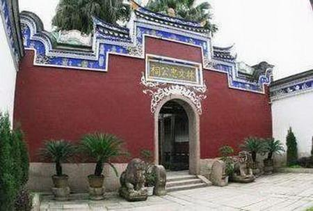
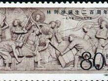

Remembrance of Later Generations
Tomb of Lin Zexu

Lin zexu's tomb is located at the foot of jinshi mountain in ma' an village on the outskirts of Fuzhou city, 57 degrees from north to south and southeast, facing Wufeng mountain. The plane is Ruyi-shaped. Its tomb is rammed with three layers of earth. The five-layer tomb is 14.6 meters wide and 37 meters deep. The earth was raised and shaped like a kettle. After sealing the soil, the center of the slope protection is decorated with a round "shou" with a diameter of 0.82m.
a tombstone measuring 1.08 meters high, 2.55 meters wide and 0.16 meters thick was erected in front of the enclosure. one was the eulogy of royal bestowal and the other was the inscription of royal bestowal. In the middle of the table stands a rectangular tablet inscribed with 56 words in regular script. The writing style is traditional. When reading, it starts with the middle line, then the right line, then the left line, then the right and then the left line, and so on.
the official titles listed on the tablet are all those of Lin zexu. according to the regulations of the time, "the father pays more attention to the child", the father can enjoy them after death. On the corner pillar around the case was inscribed a couplet: "Baizhang Songhua Reindeer Land, Sleeping on Cows for the Festival." The inscription on the tablet was engraved with a shadow: "The Emperor Qing Gaofeng has appointed the Senior Minister, the Lianghuai Salt Administration, the former Jiangsu Provincial Judge Xi Gu Lin and his wife Chen, the male less Mu Gong and the female Zheng, to succeed the male Yu Ren Gong and the female Li Ru. In the midsummer of the year of Daoguang Bingxu, the auspicious day will come. " Regular script, straight down 11 lines (reading order from middle, left and right), 12 cm in diameter.
The inscription "Xi Gu Lin Gong" refers to Lin Zexu's father Lin Binri (1749-1827); "Mrs Chen" is Lin zexu's mother Chen Xun (1759 ~ 1824); "Shaomu Gong" is Lin Zexu, and "Madame Zheng" is Lin Zexu's wife Zheng Shuqing (1789-1847); "Yuren Gong" is Lin Zexu's brother Lin Peilin, and "Li Ru Ren" is Pei Lin's wife Li. This tomb was built for his parents in 1826, the 6th year of Daoguang reign in Qing dynasty. Lin zexu died and was buried here.
planet namingon September 20, 2000, on the occasion of the 215th anniversary of the birth of national hero Lin zexu, the "Lin zexu star" monument was unveiled in zuoyingsi, Fuzhou, where Lin zexu was born, implying that "Lin zexu star" rose from here. On June 7, 1996, Academician Chen Jiansheng of the Beijing Observatory of the Chinese Academy of Sciences discovered an asteroid. According to the regulations of the International Commission on the Naming of Small Celestial Bodies, whoever discovers an asteroid has the right to name it. Dr. Zhu Jin, member of Schmidt CCD Asteroid Project Team led by Academician Chen Jiansheng and International Commission on Small Celestial Bodies and Beijing Observatory, proposed to name the newly discovered asteroid "Lin Zexu". Lin Zexu's achievements in drug control and water control have been recognized by the international community. Therefore, the International Commission on the Naming of Small Celestial Bodies approved the proposal of the Chinese Academy of Sciences. "Lin Zexu" orbits the sun in an elliptical orbit with a period of 4.11 years between Mars and Jupiter.
memorial facilitiesFuzhou has the tomb of Lin zexu, a national key cultural relic protection unit, the memorial hall of Lin wenzhong, a cultural relic protection unit in Fujian province, the birthplace of Lin zexu, Lin zexu's former residence, Lin zexu's west lake study area, the cliff inscription on the ascending mountain and the statue of Lin zexu.
memorial hall of Lin zexu's birthplace
Lin zexu's birthplace memorial hall is located at Zhongshan road, Gulou district, Fuzhou city. it was listed as a municipal cultural relic protection unit in 1997. on June 26, 2000, Fuzhou municipal government opened a "Fuzhou anti-drug education base" in the museum.
Lin zexu's former residence (yunzuoshan house), also known as "yunzuoshan house", is located at wenzaoshan north road (now called wenbei road) in Gulou district of Fuzhou city, covering an area of 3500 square meters. It was Lin Zexu's residence in his hometown before his death and was listed as the first municipal cultural relic protection unit in Fuzhou in 1961.
Lin zexu memorial hall (Lin wenzhong memorial hall)
it is located at no 16 Macao road, Gulou district, Fuzhou, covering an area of 3000 square meters. Originally founded in the 31st year of Guangxu in the Qing Dynasty (1905), Lin Wenzhong's ancestral hall has been occupied for other purposes since the 34th year of Guangxu (1908). In 1982, the people's governments of Fujian province and Fuzhou city allocated funds for restoration and opened Lin zexu memorial hall to the public. Lin Zexu Memorial Hall is a classical wooden structure, slightly rectangular and faces east from west. The main parts of the museum include the tunnel, the ceremonial gate, the royal stele pavilion, the shude hall, the north-south flower hall, the quchi building, the office building, etc. The exhibition shows Lin Zexu's life of patriotism and concern for the people with a large number of objects, photos, charts and models. In particular, the model of selling cigarettes in Humen vividly reproduces Lin Zexu's feat of selling cigarettes in Humen, Guangdong in 1839 by using modern acousto-optic techniques.
Lin zexu foundationIn 1997, a bronze statue of Lin Zexu was set up in Chinatown, new york. The bronze statue is inscribed with the Chinese words "World Drug Precursor Lin Zexu" and the English words "Pioneer in the War Against Drugs".
Lin zexu memorial parkIt was completed in p>2010 on the north bank of Hai Yin Bridge by the Pearl River in Guangzhou.
commemorative silver coinin p>1991, the 8th group of "outstanding Chinese historical figures" was issued with gold and silver coins. Lin Zexu silver coin is one of the 8th group in memory of the gold and silver coins "outstanding Chinese historical figures". Lin Zexu on the back of the silver coin "Lin Zexu" is holding a "clairvoyant". The silver beard is proud and erect, his eyes are angry and his face is mighty. He has an inviolable awe-inspiring atmosphere.
Lin Zexu Silver Coin denomination: 5 yuan; Weight: 22g; Color: 90%; Circulation: 30000.
commemorative stampson August 30, 1985, the Chinese people's post issued two kinds of stamps commemorating the 200th anniversary of Lin zexu's birth. The denomination of the 8-cent stamp is j 115 (2-1). The denomination of 80-cent stamps is j 115 (2-2).
international no smoking dayLin zexu was praised by Marx for banning smoking and selling cigarettes. In 1858, Marx affirmed Lin Zexu's feat of banning smoking in his monograph on opium trade. The "League of Nations" has designated June 3, the day when cigarette sales in Humen begin, as the "International Anti-Smoking Day". (may 31 is the world no tobacco day launched by the world health organization)